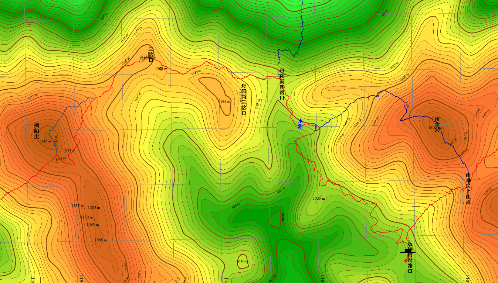
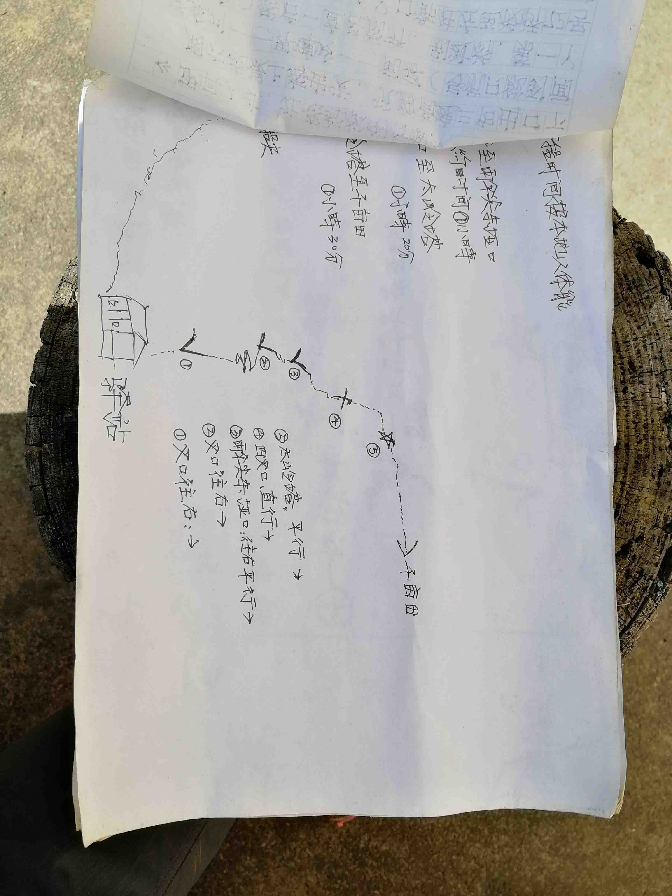

发信人: zhangxu(张旭), 信区: outdoor
标 题: 2018-11昱岭关探路报告——zx
发信站: 饮水思源 (2018年12月04日16:38:09 星期二)
线路概况：
昱岭关穿越始自歙县浩川村，终点为千亩田。之后可以选择大明上山路线连穿或大明
下山路线下山。线路较长，密林多，线路上有很多山峰可选登顶，对体能要求高。近期走
的人不多，路带少，适合领队培训。
探路人员：
领队：zx
副领1、队记：hw
副领2：zyx
押队、队医：lbr
紧急情况联系人：jfy
任务分工：
训练计划：hw、zyx
带训练：zx、lbr、zyx
线路制定：zx、hw、ldy（大明）
地图制作：zx
食品：zx、hw、zyx
装备：zyx
财务：hw
保险：ldy（大明）、zx
报备：ldy（大明）、sqc（大明）、zx
司机联系：ldy（大明）、zx
营地、腐败：ldy（大明）
训练计划：

训练情况：
除第九周周二训练因中途下雨取消、第十一周周二因协会缺人帮带协会训练外，训练
遵循了计划。队员均有不同程度的缺训，部分进行了补训。
本人忘了一次爬楼，检讨。
探路过程中全队体能储备一般。D1下午，部分队员出现抽筋预兆。当然，线路较常规
昱岭——大明连穿短了不少，不能考验体能的极限。
附上我保存的两次详细的训练记录。
screen.width - 200){this.width = screen.width - 200}">
公共装备：
高山帐*1
锅*2
炉头*1
GPS*1
对讲机*1
对讲机充电器*1
对讲机防水袋*1
修补杆一套
气罐*2（合计约1.5个）
水袋*2
小会旗*1
食品：
D0晚：自备，服务区or大明农家接热水，水杯可放车上
D1早：切片面包，车上解决
D1午：切片面包+火腿
D1晚：挂面+肉
D2早：麦片+卤蛋+沙琪玛
备用食品：压缩饼干每人1包
路餐：自备，禁止腐败
地图（15m等高距）：
screen.width - 200){this.width = screen.width - 200}">
 screen.width - 200){this.width = screen.width - 200}">
screen.width - 200){this.width = screen.width - 200}">
screen.width - 200){this.width = screen.width - 200}">
screen.width - 200){this.width = screen.width - 200}">
图中红线为预定线路，蓝线为可选选路。丹阳岗四叉路口往北为水库下撤路线。
上传不了大文件，截图将就了。
预计线路：
（正常）
D0 交大——大明农家——浩川村
D1 浩川村——福泉村——搁船尖山腰（不登顶）——板桥村——雨伞尖上山点（不登
顶）——大塔岭——千亩田
D2 （跟随大明队伍）千亩田——大明农家
（梯田扎营）
D1 浩川村——福泉村——搁船尖山腰（不登顶）——板桥村——雨伞尖上山点（不登
顶）——梯田营地
D2 梯田营地——大塔岭——千亩田——第一个难点（与大明队伍会合）——大明农家
screen.width - 200){this.width = screen.width - 200}">
实际线路：
D0 交大——大明农家——竹铺村G56桥下
D1 竹铺村——浩川村——福泉村——搁船尖——板桥村——雨伞尖上山点（不登顶）
——大塔岭——千亩田
D2 （跟随大明队伍）千亩田——大明农家
航迹（by zyx）：
http://bbs.sjtu.edu.cn../htm/pics/154390797180631.kml
预计时间节点：
（正常）
D1
04:15 起床
04:30 浩川村大巴出发
+02:15 里程5.5km爬升600m(360-960)
06:45 到达福泉村
06:50 福泉村出发
+01:40 里程1.5km爬升500m(960-1460)
08:30 登顶搁船尖
08:40 搁船尖出发
+01:30 里程2.4km 下降400m(1460-1060)
10:10 到达水库下撤点
10:15 水库下撤点出发
+01:00 里程3.1km 下降50m(1060-1010)
11:15 到达板桥村
12:00 板桥村出发(13:00关门时间)
+01:30 里程1.4km上升300m(1010-1310)
13:30 到达雨伞尖上山点
13:35 雨伞尖上山点出发
+01:10 里程2.2km爬升100m下降170m(1310-1240)
14:45 到达梯田营地岔路口
14:50 岔路口出发
+01:40里程2.6km 爬升210m下降80m(1240-1370)
16:30 到达最后一个山头(大塔岭后一个山头)
16:35 山头出发
+01:15里程2.2km下降240m(1370-1130)
17:50 到达千亩田营地
（17:30天黑，可从午饭点挤时间）
08:30 熄灯睡觉
（D1正常会合）
D2
06:00 起床
08:00 出发
08:30 到达悬崖难点
10:30 到达难点2
12:30 到达向导家、腐败
14:00 出发回上海
20:00 到达庙门，解散
（D1来不及到千亩田）
D2
尽早出发在梯田营地扎营，大明D2 08:00出发
04:30 起床
05:30 梯田营地出发关门时间(天亮06:11)
+00:50 里程1.5km 爬升170m(中间一段里程300m 爬升近100m)(1190-1360)
06:20 返回大路
06:25 继续赶路
+01:00 里程2km 爬升90m下降60m(1360-1390)
07:25 到达最后一个山头(大塔岭后一个山头)
07:30 山头出发
+01:15里程2.2km下降240m(1390-1150)
08:45 到达千亩田营地
09:15 到悬崖难点，可赶上（大队伍8:30—10:30过悬崖难点）
或梯田营地再往前找营地，D2可少赶路
实际时间节点：
D1
04:31出发
04:56进山口
05:12休息脱衣服
05:37过溪
06:10出密林
06:58福泉
08:20领队摔了
08:56 zyx摔了
09:58水库下撤口（休息）
10:10出发
10:20雨伞尖分叉口（横切）
11:00板桥村午饭点
11:40出发
12:54清凉峰界碑（煮盐散）
15:20大塔岭最后一尖
16:13和大队伍会和
16:20到达千亩田营地
D2
可参考大明队伍
天气情况：
screen.width - 200){this.width = screen.width - 200}">
出线前有连续降雨。浩川至搁船尖段河流较急，但水位不高；树丛水汽充沛，很潮湿
，没有穿着防水层基本湿透。山上山阴面，较为湿滑。
出线前一天开始天气转好，凉爽宜人，山顶（搁船尖）较冷。
千亩天宿营，晚上4人高山帐+G400，个人体验舒适。
线路过程：
D0
计师傅到得很准时，高速通畅。约22：30放下大明队伍。走小路不便，再上G56杭瑞高
速，23：01下高速，前往浩川村。过浙皖边界，高速收费增加。
计师傅大车过竹铺乡后，道路狭窄且有建材堆积，经过杭瑞高速桥底即不便继续向前
开了，遂停高速桥底。宿车上。
忘报平安，检讨。
D1
04：05 闹钟，四人皆醒。04：31出发。距离预计出发点1.7km，导致时间节点落后20
min。
至浩川村好走，浩川村内小路很多，走岔两次，饶了点路。
出浩川，上山路径明显。5.2km处走错路，左拐岔路不很明显，虽有蓝色路带，但密林
有所遮挡。5.7km岔路处探了一小段密林，密林有开路痕迹，难走，实则另一条为明显路径
。此处浪费约10min。
两次走错路，押变领。
至福泉，仍与时间节点保持20min落后。
至搁船尖山腰岔路口，考虑天气情况好，时间节点基本追回，队员情况良好且有登顶
意愿，决定登顶。下山时出发时间节点已完全追回。
下山路线前一半较为明显，后一半基本没有，基本穿密林，时间、体能消耗较大。在
我一次走错方向后，押转领，之后基本由lbr找路。至与切山腰线路会合，穿密林结束。过
程中我的航迹基本吻合原定航迹，但部分队员航迹较飘。
以后如若登搁船尖，下山路线建议选择返回上山岔路口，走切山腰路线。
至板桥前的茶田，路较窄，两侧树枝密集，难走无危险。
茶田至板桥，路好走，景色不错。
至板桥，提前时间节点15min，有驴友驿站，老乡：闻保顺，电话：13989863583。人
好，驿站门前有大片水泥地，估计扎10个帐篷没问题，花园有吊床。公路通板桥，但大车
极不好上，小车好上。询问得知昱岭走的人较少了。
11：40板桥出发，11：50我发现在老乡家落了手表，回去取，拖了点时间节点。
板桥出发后是上雨伞尖的路，保持了登搁船尖的速度，我和lbr交替带队，之后队员反
应差点带崩。午饭后还是应该慢慢走。之后我也出现了抽筋的预兆。
12：54清凉峰界碑三岔路口，起灶煮水泡盐散。大休息后，全员状态大回血。之后我
再无大腿的不适感觉。
板桥之后除了山阴的路较为湿滑、狭窄外，较为好走。我们走的可能是老路，路径痕
迹不很明显，且有消失趋势。lbr查到有其他岔路，可能是新路，如果带新人、会员，建议
走近期航迹较多的新路。
16：13千亩田岔路口附近与大明队伍会合。
D2
跟随大明队伍下山，较为顺利。详情可看大明领队组总结。
营地情况：
竹铺村，G56桥下空地很大，水泥地，可以扎5顶帐篷左右。但不排除以后地方被用了
的情况。计师傅大车可以停，睡车内的话，除最后一排外，舒适度较差，保暖较好，仍建
议拿睡袋或多穿一件保暖衣物睡觉。
浩川村，村内多水泥地(道路)，空地少，一顶帐篷找地方可以扎，帐篷多的话需要联
系老乡。
福泉村，有队伍在此扎营，但不清楚是帐篷还是住老乡家。不通公路，老乡说出山买
米要花一天时间。
板桥村，有驴友驿站，条件好，通公路，但大车几乎上不了，小车可以上。
梯田，没有去，不过路线中通往梯田的岔路不明显，不建议扎营。
千亩田，条件好，但营地费巨贵，一开始要价10元/人，最后貌似砍到31人250元。具
体情况看大明总结。离景区近，方便下撤。
screen.width - 200){this.width = screen.width - 200}">
板桥村驴友驿站，老乡：闻保顺，电话：13989863583
水源情况：
（探路前歙县连续下了近两周的雨，以下可能不能真实反映平时的水源情况）
村子里、千亩田都有水源。
浩川村——福泉村，有2、3次过溪点，水流较大。
福泉村——板桥村，有小溪，水量较小，不适宜取水。未到板桥时雨伞尖第一个上山
点有较大水流。
板桥村——千亩田，几乎没有良好的水源，只有涓涓细流。
下撤路线：
水库下撤，岔路明显，路程较长。位于前半程，适用于福泉村——水库下撤岔路崩掉
的情况。但之后板桥可以通车，所以水库下撤点几乎用不上。
板桥村，通车，有驴友驿站。但和G56隔了一座山，车辆应该没有方便的路线。如果让
计师傅来接的话，从大明山村赶来需要提前联系。
线路总结：
昱岭关段线路难度低，强度大。且有多种路线选择，适宜协会不同线路需求。
干事线：
①D1：竹铺——千亩田，D2：千亩田——逆时针大明下山。强度很大，第二天下山有
难度。根据强度要求第一天可选择登顶搁船尖以及雨伞尖。
②D1：竹铺——千亩田，D2：千亩田——顺时针下大明山。也就是这次的线路。强度
基本集中在第一天，可选择登两顶。第二天第一个难点有一定危险。
如此设计即为昱岭大明连穿。天气不好比较难走完。梯田可作备用营地，水则要在板
桥带上山。昱岭段岔路多，少路带，适宜作领队培训线路。
会员线：
①一天线（轻装）：竹铺——搁船尖——板桥村——下山
②一天线（轻装）：水库上山——雨伞尖——板桥——下山
③两天线：D1：板桥——千亩田，D2：千亩田——顺时针下山。板桥上山可能需要租
小车分批运上。
附上驴友驿站老板提供的地图及攻略：
screen.width - 200){this.width = screen.width - 200}">
 screen.width - 200){this.width = screen.width - 200}">

主要参考资料：
bbs zzmax 2011年昱岭关探路报告
bbs outdoor 板内查询 昱岭
个人总结：
第一次当领队，如履薄冰。
庙门打开手机发现下载的离线地图用不了了，慌得一批，赶紧下载新的。天地图用着
不错。
去的车上根本睡不着，心里只希望明天千万别出什么差错。
大明农家到了，瞬间偌大的车上只剩下了5个人，还是那段鬼故事，从物理楼讲到了竹
铺村，乐此不疲。
开到G56桥下，大车不能往前开了。大家收拾了一下在车里睡觉，想出这个主意的lbr
真他娘是个人才。不曾想计师傅不知从哪掏出个被子，呼呼呼就在最后一排睡开来了。当
时车里我感觉巨热，就速干+冲锋衣，身体凌空架在过道上准备睡觉，时刻提防着滚下座位
，…………直到我发现我横着可以夹在空隙中…emm………半夜被冻醒，但还是辗转反侧间
没准备加什么衣服，毕竟就睡4个小时。（是的没错忘了报平安了，反省）
早上4:05准时起床，计师傅仍睡得安详，吃完早饭，我提了提老铁借我的充电宝，巨
重，我以为有两斤（后回来后查参数知道其实就550g左右），就很纠结要不要带上山，再
三抉择还是带了上去。下车前我们遇到一个问题，关上大巴的门之后，怎么把钥匙还给计
师傅or留在车内。我提议打开一扇窗，扔进来。但lbr及时发现按遥控器和车辆反应有一定
延迟，于是就可以在车内按下关门而后稳稳放在驾驶员座位上，然后跳出车门~
第一次走夜路，好在是村里的路，好走。但村里弯弯绕绕，与航迹偏了几次，不知是
村民扩建了房屋还是我们没注意到岔路。出村后的上山路，一路回头可以看到月亮，朦胧
的月色很温柔，但还要赶路，只得埋头前进。赶路过程中我们竟发现只要爬得足够快，就
能看到月亮“升”起来！
第一次带队，走错了不少路，好在发现的早。GPS是真的不好用，可能还要学一下。
福泉村lbr掏出一个骚气红色头巾，就是骚，没啥好说的。
上搁船尖，zyx如一个蓝色的影子尾随在我身后，只得通过控制与hw的距离控制速度……至
于lbr嘛，只要他的红色头巾不时出现在林木中间就ok。（说着玩的）到搁船尖顶，时间节
点赶上了，大家状态也不错。远处有云海，好想去看看~
下搁船尖一路密林，真的是没路找路。比起来之后的路都显得平淡无奇，也可以说是
又臭又长。据说zyx被密林扎的很惨，真不知道lbr怎么穿着短袖过去的。
板桥村老乡人很好，就差送点吃的了。午饭后出发10分钟，我发现手表掉在了老乡家
，赶紧跑回去取，估计我之后的接近抽筋的情况与此密切相关。刚吃完饭还是不要剧烈运
动。
之后有一次走错路，掉头lbr带队，差点被他带崩，我在后面喊着：“后面要崩了”，
之后一个三岔路口我们起锅煮了盐散，发现全队只有我带了杯子，就贡献出来了。一边喝
盐散，一边还要听lbr的神奇理论，快被洗脑了。
到大塔岭，发现时间充裕，干到千亩田没问题。于是乎我们讨论起到千亩田怎么蹭饭
。本以为到了千亩田就能直接蹭上，没成想在营地前的竹林里突然听到ldy的声音：“后面
跟上”。于是乎，我们这边喊了起来“领队，迷路了~”不一会就在岔路会合了。D1路线顺
利完成，还登了搁船尖，大家还是强啊。
在营地，lq和我说：“刚才上厕所，卧槽突然飞过一个无人机，吓尿了你知道吗（lq
语气）”……然后之后我上厕也遭遇了相同的尴尬情景……
晚上睡觉嘬完水，躺下后手就伸出睡袋了，然后身体被卡住了……两只手摸了半天都
没摸到拉链，感觉只是卡住了，也不是很难受就又睡着了……早上起床手有点冷，发现睡
袋扭了，导致拉链上半部分被转到了我身体的左侧……
拜天气所赐，第二天和第一天一样顺利。那个难点也不如去年那么震撼了。一年时间
，真快啊~
感谢队友！感谢大山！
图片：
screen.width - 200){this.width = screen.width - 200}">
搁船尖登顶前，图中可以看到搁船尖
screen.width - 200){this.width = screen.width - 200}">
搁船尖顶的美景！远方有云海！
screen.width - 200){this.width = screen.width - 200}">
Zyx的自拍~脸好方啊哈哈哈
screen.width - 200){this.width = screen.width - 200}">
茶田以及骚气lbr
screen.width - 200){this.width = screen.width - 200}">
（实测不止16分钟）
screen.width - 200){this.width = screen.width - 200}">
正经合照（zyx设置完定时拍摄跑过来，然后牺牲了）
--
秋天的风吹过原野，无尽的星空多灿烂。
※ 来源:·饮水思源 bbs.sjtu.edu.cn·[FROM: 59.78.18.205]
|